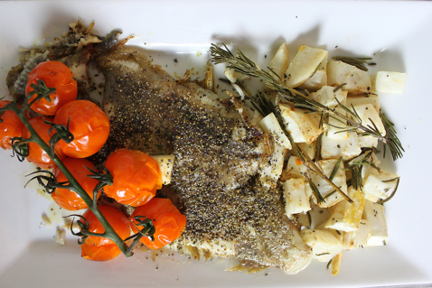

Whole Lemon Sole with Roasted Celeriac
Nutritional Facts (per serving)
Calories 450 | Total Fat 29.9g | Saturated Fat 4.1g | Carbohydrates 22.4g | Fibre 4.9g | Protein 25.2g
Serves: 4
Ingredients
- 800g celeriac
- 350g of cherry tomatoes
- 8 tbsp. olive oil
- 8x 260g lemon sole
- Salt and freshly ground black pepper
- Zest and juice of a lemon
- 12 fresh thyme leaves
Method
Step 1: Preheat the oven to Gas Mark 4 or 180°C.
Step 2: Peel the celeriac, and dice it into small cubes.
Step 3: Place the cherry tomatoes on a baking tray and drizzle with a tablespoon of the olive oil. Roast for 30 minutes. and allow to cool for 5 minutes or so and serve.
Step 4: Take them out of the oven and place to one side to cool.
Step 5: Put a tablespoon of olive oil in a large frying pan over a medium heat, then fry the lemon soles, one at a time, in the oil. It should take around 5 minutes on each side to fry lemon sole.
Step 6: Once they’re all cooked, plate them up and season with salt and pepper to taste.
Step 7: Serve the fried mackerel fillets with a side of roasted celeriac and orange tomatoes.